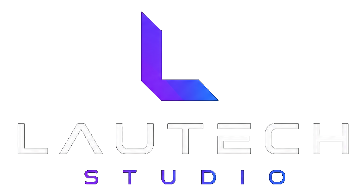

Desenvolvimento de Sites
Sites institucionais, landing pages e páginas de venda rápidas, responsivas e bem estruturadas.
Saiba mais →
Sites estratégicos • Marcas fortes • Marketing digital
Criamos sites profissionais, identidade visual e estratégias digitais para apresentar melhor sua empresa e gerar mais oportunidades.
Serviços
Sites institucionais, landing pages e páginas de venda rápidas, responsivas e bem estruturadas.
Saiba mais →Logo, paleta, tipografia e direção visual para sua marca parecer profissional em todos os canais.
Saiba mais →Estratégias de conteúdo, campanhas e posicionamento para atrair leads e gerar oportunidades.
Saiba mais →Otimização técnica, textos persuasivos e melhoria de performance para transformar visitas em contatos.
Saiba mais →Pacotes
Essencial
Para negócios que precisam sair do improviso e ter uma página clara, responsiva e pronta para receber contatos.
Mais procurado
Para empresas que querem apresentar uma imagem profissional desde o primeiro contato até a proposta.
Crescimento
Para marcas que já estão online e precisam transformar presença digital em tráfego, leads e oportunidades.
Diferenciais
Nada de modelo genérico: cada página nasce do posicionamento, oferta e público do negócio.
Estrutura, chamadas e botões pensados para transformar visitantes em conversas e pedidos.
Experiência preparada para celular, desktop, SEO técnico e carregamento eficiente.
Acompanhamento claro durante o projeto e orientação para os próximos passos digitais.
Portfólio
Site institucional com cardápio e WhatsApp
Site profissional para agenda e autoridade local
Landing page para captação de alunos
Site institucional para autoridade e captação
“A Lautech Studio organiza a presença digital com visão de negócio: primeiro entende a oferta, depois constrói a experiência.”
Processo
Entendemos seu negócio, público, oferta e canais para definir a melhor estratégia.
Organizamos identidade, mensagem, estrutura das páginas e caminhos de conversão.
Construímos o site com foco em velocidade, navegação clara e experiência responsiva.
Publicamos, revisamos e orientamos os próximos passos para atrair visitantes qualificados.
Como solicitar orçamento
Conte se você precisa de site, identidade visual, marketing digital ou uma solução completa.
Avaliamos o momento da marca e indicamos o melhor formato para começar com clareza.
Você recebe escopo, prazo e próximos passos para iniciar o projeto com segurança.
Sobre a Lautech Studio
Somos um estúdio especializado em desenvolvimento de sites, identidade visual e marketing digital para empreendedores, empresas locais e marcas em crescimento. Unimos design, tecnologia e estratégia para transformar sua presença online em um canal real de relacionamento e venda.
Conheça mais sobre nós →Estrutura pensada para apresentar sua oferta e facilitar o contato.
Visual alinhado ao posicionamento, público e canais da empresa.
Páginas rápidas, responsivas e preparadas para publicação segura.
Base pronta para campanhas, conteúdo, SEO e captação de leads.
Perguntas frequentes
Desenvolvemos sites institucionais, landing pages, páginas de venda e estruturas digitais para apresentar serviços, captar contatos e fortalecer a marca.
Sim. Podemos criar ou ajustar logo, paleta de cores, tipografia, direção visual e elementos de marca para manter o site e os canais digitais consistentes.
Sim. Os projetos podem incluir botões de WhatsApp, chamadas estratégicas, formulários e estrutura de navegação pensada para facilitar o contato do visitante.
O prazo depende do escopo, quantidade de páginas e materiais disponíveis. Após o diagnóstico inicial, enviamos uma previsão clara junto com a proposta.
Sim. Além do site e da identidade visual, oferecemos planejamento de conteúdo, campanhas, otimização de conversão e ações para atrair oportunidades qualificadas.
Conte sobre seu negócio e receba uma proposta alinhada ao seu momento.